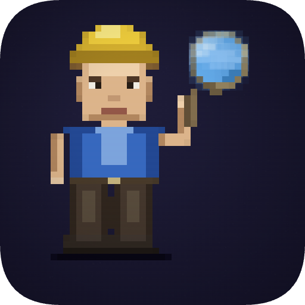

manole
Local AI file assistant. Index your documents, ask questions,
explore relationships on an interactive graph.
No cloud. No API keys. No data leaves your disk.
01
semantic search
ask natural language questions across PDFs, text, images
02
file graph
interactive map of document relationships and clusters
03
vision
auto-caption images with local Moondream2 model
04
offline
models download once, then fully self-contained
$
git clone https://github.com/vladdedita/manole.git
$
cd manole && ./run.sh
Python + Electron
GGUF models
macOS & Linux